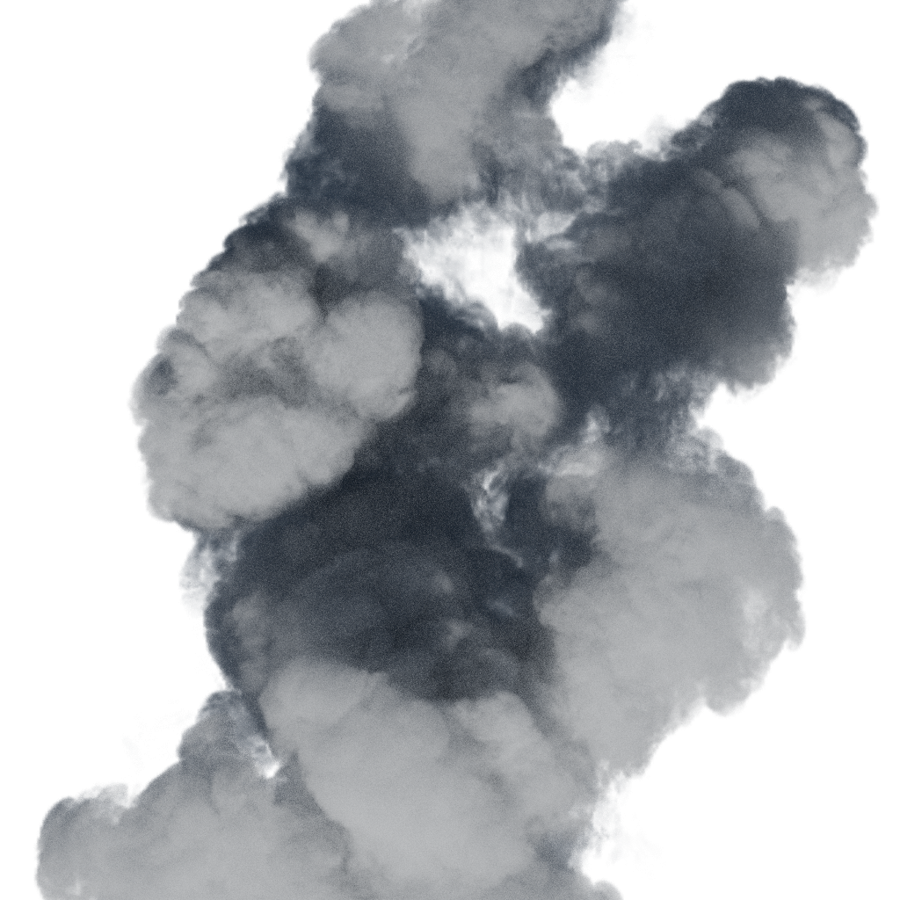
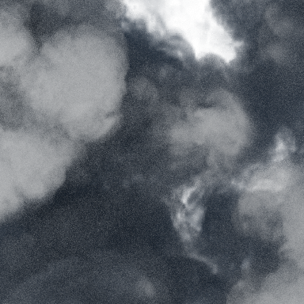
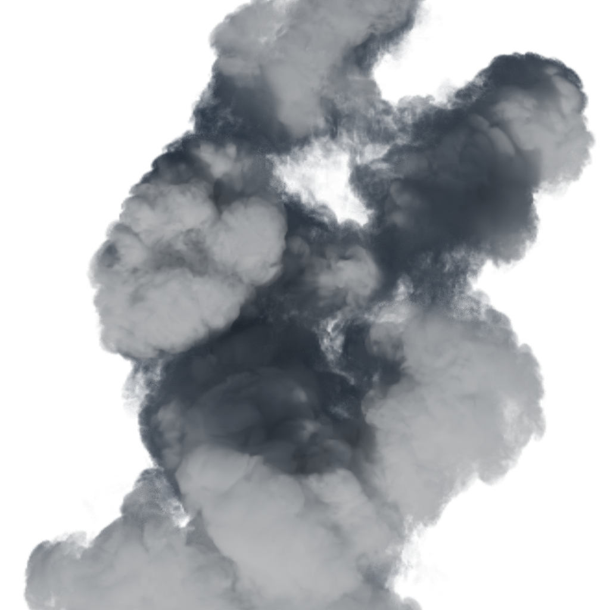
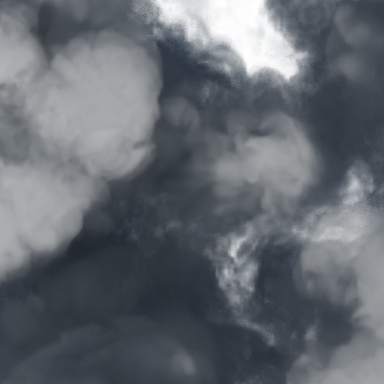

간격 0.35 · denoise OFF

동일 위치 384² crop / 실제 픽셀
오프라인 렌더 158.5초
왼쪽 OFF / 오른쪽 ON. 위 기존 step .35 / 아래 더 촘촘한 .175. 같은 cloud06, 카메라65°, 태양15°, 최대96 samples · adaptive 동일기본값, seed7. 중심 영역을 원래 2K 샘플과 같은 픽셀 크기로 렌더한 1024² 비교입니다. 아래 384² crop은 확대 보간하지 않았습니다.
OFF의 미세 점은 입자 노이즈일 수 있습니다. 양감/돌기/갈라진 외곽이 두 조건에서 지속되는지 보고 결을 판단합니다. 실제 북유럽 장면·스크롤·웹 성능 증거가 아닙니다.

동일 위치 384² crop / 실제 픽셀
오프라인 렌더 158.5초

동일 위치 384² crop / 실제 픽셀
오프라인 렌더 165.0초
동일 위치 384² crop / 실제 픽셀

오프라인 렌더 301.5초

동일 위치 384² crop / 실제 픽셀

오프라인 렌더 306.0초